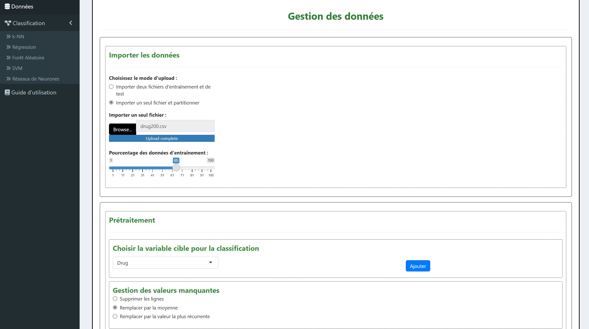
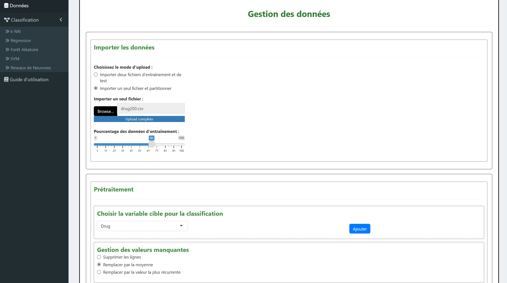

Application interactive sous R Shiny
Développement d’une application R Shiny permettant de charger un jeu de données, d’appliquer des modèles statistiques et de visualiser les résultats de manière interactive.

Développement d’une application R Shiny permettant de charger un jeu de données, d’appliquer des modèles statistiques et de visualiser les résultats de manière interactive.
Ce projet a été réalisé dans le cadre du Master 2 Statistiques Appliquées et Analyse Décisionnelle à l’Université de Caen. L’objectif était de rendre interactifs et accessibles plusieurs modèles statistiques via une interface R Shiny conviviale.
ggplot2 ; 
